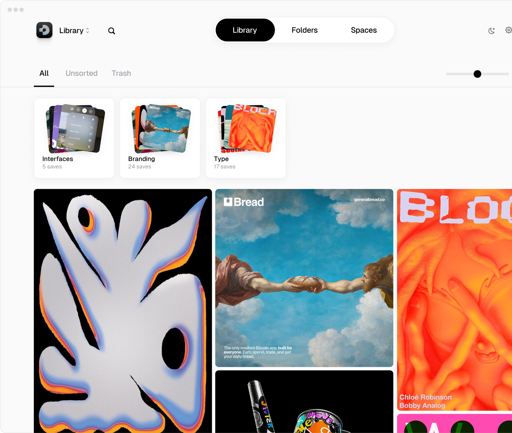
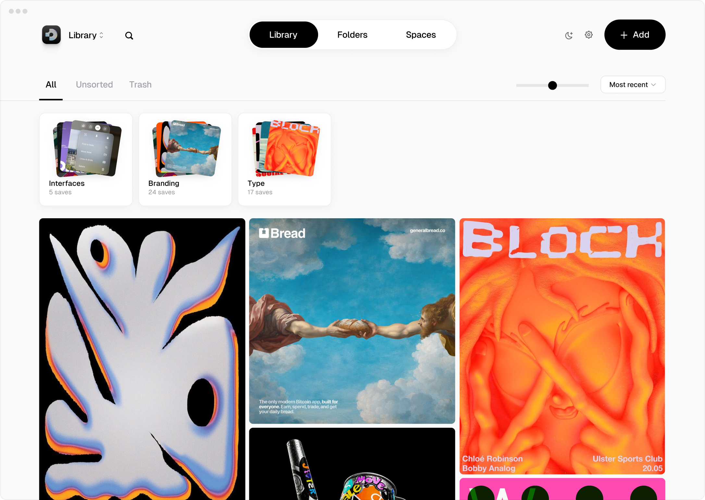

The Mac app for design inspiration.
Capture, organize, and find every reference — without leaving your desktop.

Download for Mac
Drag, paste, screenshot
AI visual search
Infinite spaces
Local-first library
Auto-tagging
Generate variations
Rediscover mode

